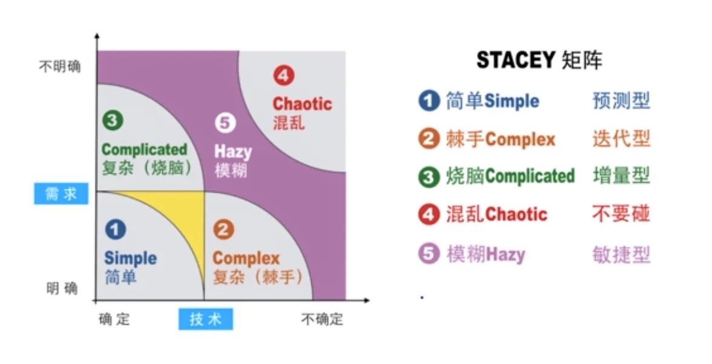

认识Scrum
Scrum指南中定义Scrum是一个“轻量级框架”，目的是帮助个人、团队、组织通过建立解决复杂问题的自适应机制来创造价值（Scrum指南 2020）。
我们可以看到Scrum给自己的定位是一个轻量框架，目的的解决复杂问题，手段是通过建立“自适应机制”。
- 轻量级框架
“框架” 的特点是它本身没有指定太多细节，必须由使用框架的人来进行补充，因此它并不是一个开箱即用的完整方法论，它提供的类似于一套未装修的写字楼，需要使用者根据自己的实际情况完成装修：比如Scrum框架中使用产品代表列表来管理需求，那产品待办列表里放的是什么呢？需要使用者自己来选择，大多数会选择使用用户故事来填充，也有团队会选择用需求条目来填充。再比如Scrum框架并未对研发过程采用的实践进行说明，那就需要实践者自己选择采用哪些研发实践（比如”极限编程“).Scrum这个特性确保了它的灵活性，使用者可以从过去五十多年的优秀实践中选择最适合的那些，不同人、不同公司、不同行业可以演化出最适合自己的方法论。同时也让它具有了另一个特点知易行难，Scrum看起来很容易，但是真做到需要耗费大量的精力，就像学习国际象棋一样，您可以通过阅读国际象棋的官方规则手册，很快学会开始下棋，但是离成为一个国际象棋大师却有很长的路要走。
- 复杂问题
Scrum的目标是提供针对复杂问题的解决方案，这并不是说对于简单问题Scrum没有效果，而是说在解决复杂问题时会体现出更多的价值。Scrum的这个特点往往也成为项目团队选择是否采用Scrum的一个主要因素。通常我们在分析软件项目时往往从业务复杂度和技术复杂度两个维度进行分析，这个分析思路来自著名的Stacey矩阵，通过判断项目处于Stacey矩阵中的位置来选择适用的项目管理过程。

- 自适应机制
Scrum主张通过建立自适应的协作机制来调动团队的主动性，充分发挥团队每个人的专长，以此推动问题最终解决，Scrum基于以下理念：对于新的复杂产品的开发，只有为小型且自组织的团队指定目标而不是特定任务，才能达到最佳效果。团队可以自由决定实现这些目标的最佳方法。 Scrum还定义了有时间限制的迭代开发周期，通过小周期快速迭代实现团队的自我进化，一个理想的Scrum过程如下：
- 产品负责人将复杂问题的工作安排到产品待办列表中。
- Scrum 团队在 Sprint 期间将选择的工作转化为价值增量。
- Scrum 团队及其利益相关者检查结果并为下一个 Sprint 进行调整。
- 重复
Scrum一词来源于英式橄榄球比赛，原意为“密集争球”，寓指整个团队攒足力量，为了一个共同的目标，一起向前发起冲刺。Scrum的发明者认为这与开发人员以迭代、增量的方式集中全力交付产品的过程非常相似，所以将这种开发方法命名为Scrum。
SCRUM三大支柱
Scrum 的三大支柱支撑起每个经验性过程控制的实现: 透明性、检验和适应。
1.透明性（Transparency）
透明度是指，在软件开发过程的各个环节保持高度的可见性，影响交付成果的各个方面对于参与交付的所有人、管理生产结果的人保持透明。管理生产成果的人不仅要能够看到过程的这些方面，而且必须理解他们看到的内容。也就是说，当某个人在检验一个过程，并确信某一个任务已经完成时，这个完成必须等同于他们对完成的定义。
2.检验（Inspection）
开发过程中的各方面必须做到足够频繁地检验，确保能够及时发现过程中的重大偏差。在确定检验频率时，需要考虑到检验会引起所有过程发生变化。当规定的检验频率超出了过程检验所能容许的程度，那么就会出现问题。幸运的是，软件开发并不会出现这种情况。另一个因素就是检验工作成果人员的技能水平和积极性。
3.适应（Adaptation）
如果检验人员检验的时候发现过程中的一个或多个方面不满足验收标准，并且最终产品是不合格的，那么便需要对过程或是材料进行调整。调整工作必须尽快实施，以减少进一步的偏差。
SCRUM的组成

Scrum将整个开发周期划分为若干小的迭代周期，每个小的迭代周期称为Sprint，每个Sprint的长度为2到4周。
在Scrum中，使用产品待办列表（Product Backlog）来管理产品或项目的需求，产品待办列表是一个按照商业价值排序的需求列表，实践中经常使用用户故事作为列表的条目。
Scrum的开发团队总是先开发的是对客户具有较高价值的需求。在每个Sprint中，Scrum开发团队从产品Backlog中挑选最有价值的需求进行开发。
Sprint中挑选的需求经过Sprint计划会议上的分析、讨论和估算得到一个Sprint的任务列表，我们称为Sprint Backlog。在每个迭代结束时，Scrum团队将交付潜在可交付的产品增量。
Scrum 也可以简单归纳为“3355”：
第一个3是指Scrum的三个角色，分别是产品负责人（Product Owner）、Scrum Master和Scrum团队；
第二个3是指Scrum的三个交付物，分别是产品待办列表、冲刺待办列表和迭代增量；
第一个5是指Scrum的五个活动，分别是Sprint、Sprint计划会议（Sprint Planning Meeting）、每日站会（Daily Scrum Meeting）、Sprint评审会议（Sprint Review Meeting）和Sprint回顾会议（Sprint Retrospective Meeting）
第二个5是指Scrum的五个价值观，分别是承诺、专注、开放、尊重和勇气。
2015年以来，互联网带来的巨变使敏捷方法受到了更多开发团队的欢迎，而其中Scrum以其扩展性、门槛低、名字和术语更容易被接受等因素，逐渐成为最受欢迎的敏捷实践。如今，Scrum的影响已经远远超出软件开发领域，成为零售、军事、风险投资甚至学校里完成各种任务的创新方法，Scrum正在改变着世界。
灵活使用Scrum
自1995年首次发行至今，Scrum已被全球众多软件公司所采用。今天，它被认为是敏捷软件开发中应用最广泛的框架。针对Scrum已经出版了1000多本书，该方法也已经成功地应用于其他领域，例如：制造，营销，运营和教育。
随着Scrum的发展，互联网上散布着各种有关Scrum的理论和主张，这使我想起盲人摸象的故事。Jeff Sutherland认为Scrum是一个框架，其中包含了过去五十多年人们所发明的各种最佳实践，能找到最适合你的那种实践才是最关键的，Ken在接受采访时曾经说过：“不加调整地盲目应用任何技术都是有害的”。
最后我们引用《人月神话》作者弗雷德·布鲁克斯（Fred Brooks）在“ No Silver Bullet—Essence and Accidents of Software Engineering”的文章中的观点：没有任何单一的技术或过程可以带来软件开发效率的显着提高。这句话对敏捷同样适用，并不是实践了Scrum或者XP就可以解决你的所有问题，先定义清楚你面临的问题，然后去找到适合你的那些实践。
附-SCRUM发展史
Jeff Sutherland和Ken Schwaber在90年代初构想并实践了Scrum管理过程，1995年，杰夫·萨瑟兰和施瓦布在美国计算机协会举办的一次研讨会上发表了一篇题为《Scrum开发流程》的论文，梳理了一些推荐的做法,标志着Scrum的正式发布。
-
在2001年2月，Jeff和Ken在参与发布了敏捷软件开发宣言。并在敏捷宣言发表后不久发起成立了敏捷联盟，肯·施瓦伯（Ken Schwaber）担任第一任主席。
-
2001年，受极限编程创始人肯特·贝克（Kent Beck）的启发，肯·施瓦伯（Ken Schwaber）与迈克·比德尔（Mike Beedle）合著了第一本关于Scrum的书《Agile Software Development with Scrum》。
-
2002年，Ken Schwaber与Mike Cohn和Esther Derby共同创立了Scrum联盟，由Ken主持该组织，在随后的几年中，创建并发布了非常成功的ScrumMaster认证体系及其衍生产品。
-
2006年，Jeff Sutherland创立了自己的公司Scrum.inc，继续提供和教授Scrum认证课程。
-
Ken在2009年秋天离开了Scrum联盟，并创立了Scrum.org，主要是通过Professional Scrum系列进一步提高了Scrum的质量和有效性。
-
Jeff和Ken在2010年首次发布《Scrum指南》，并在2011年、2013年、2017年、2020年对其进行了更新，建立了全球广为认可的Scrum框架体系。